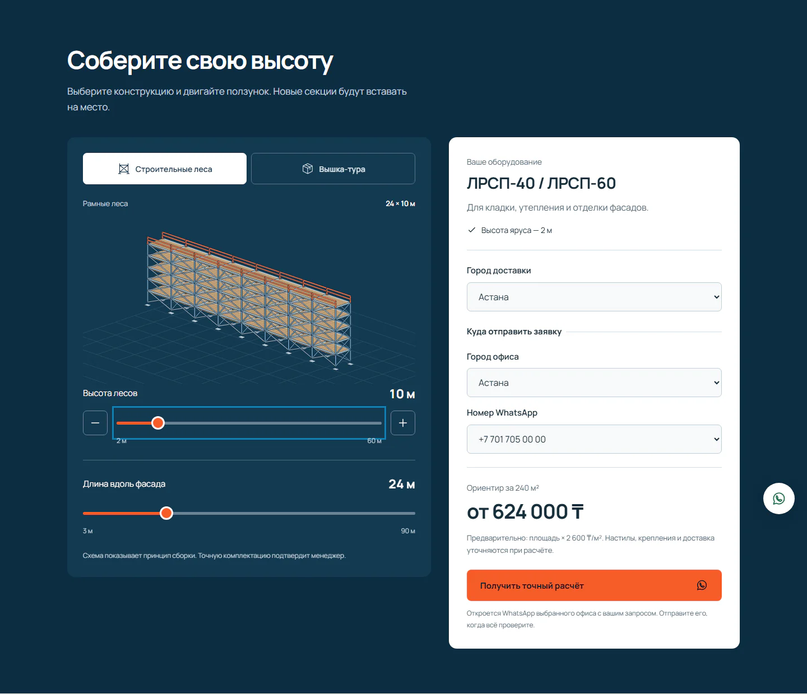
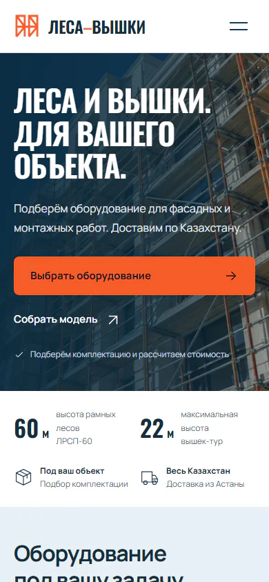

Сайт с конфигуратором
Леса-вышки
Каталог оборудования с интерактивной сборкой конструкции.

Главная страница опубликованного сайта
О проекте
Адаптивный сайт строительного оборудования. Посетитель выбирает леса или вышку, меняет размеры, видит схему сборки и передаёт выбранную комплектацию в запрос менеджеру.
Что внутри
- Каталог лесов и вышек-тур
- Интерактивная схема сборки
- Настройка высоты, длины и площадки
- Заявка с выбранной комплектацией
Экраны проекта



